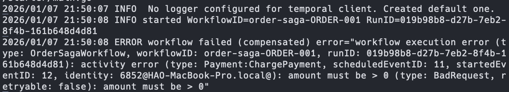
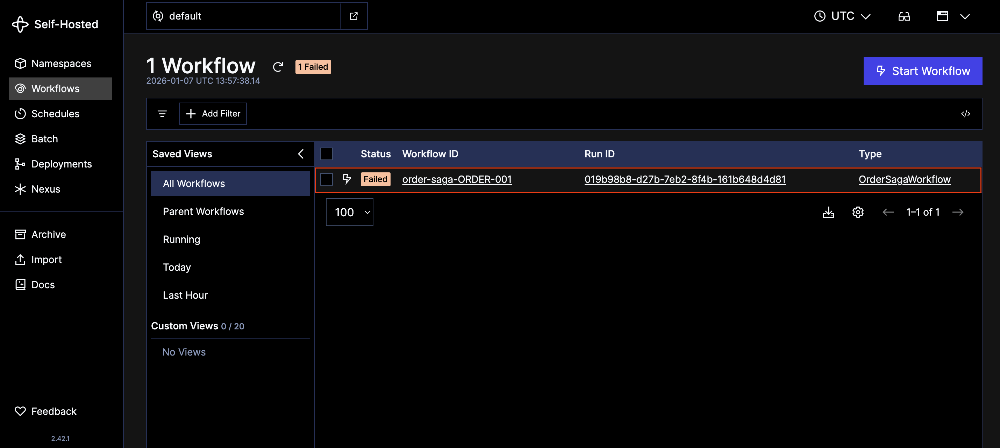
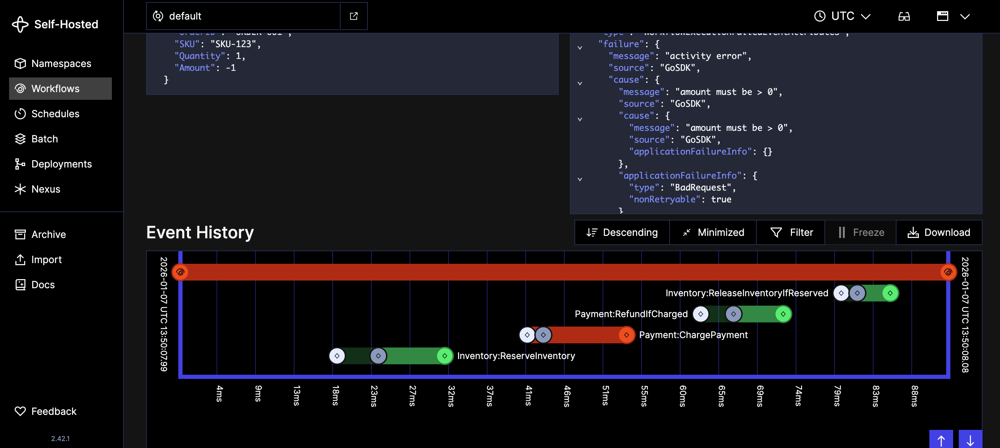

實現 Orchestration Saga 的挑戰 在 微服務（Microservices） 的架構下，要確保跨多個服務的資料一致性，一直是開發者心中的痛。過去在 單體式架構（Monolithic） 裡，我們有強大的 ACID 資料庫 事務（Transaction） 罩著我們，但在分散式系統中，這道防護網消失了。雖然 二階段提交（2PC, Two-Phase Commit） 曾經是標準答案，但在高併發的網路世界裡，它就像是在尖峰時刻封鎖十字路口一樣——鎖定資源的時間太長，導致整體系統效能低落，甚至容易引發 死鎖（Deadlock） 。因此， Saga Pattern 成為了現代的主流選擇：透過一連串的 本地事務（Local Transactions） 與 補償機制（Compensating Actions） 來達成 「最終一致性」 。
補充 ：關於 Saga 的介紹，可以參考我在鐵人賽中撰寫的文章 。
然而，知道 Saga 是一回事，要實作它又是另一回事。如果嘗試不依賴任何框架，徒手寫程式碼來實現 Orchestration Saga 會發現自己很快就陷入了 例外處理的地獄 。你需要考慮：
如果服務 A 成功了，但服務 B 超時了怎麼辦？
如果要 rollback，補償動作本身也失敗了怎麼辦？
負責協調的 指揮官（Orchestrator） 自己當機重啟後，還記得做到哪一步嗎？
這通常會導致業務邏輯被大量的 重試（Retry） 、狀態檢查和計時器程式碼淹沒，變得難以維護。這時候，我們需要一個能幫我們處理這些「分散式髒活」的神器——它就是 Temporal 。
什麼是 Temporal？
Temporal 是一個開源的 微服務編排平台（Microservice Orchestration Platform） ，或者更精確地說，它是一個 持久化執行（Durable Execution） 系統。在傳統開發中，你需要自己寫 code 去記住「現在跑到第幾步」、「是否需要重試」；但在 Temporal 裡，你只需要專注寫「流程原本該長什麼樣子」。Temporal 具備以下特點：
持久性（Durability） ： 即使你的應用程式崩潰、伺服器重啟，Workflow 的狀態依然被完整保存，重啟後會從「斷掉的那個操作」繼續執行，彷彿什麼事都沒發生過。可靠性（Reliability） ： 內建強大的 Retry 機制，對於網路抖動或短暫的服務不可用，它會自動幫你重試，直到成功或達到上限。可視化（Visibility） ： 透過 Temporal Web UI，你可以清楚看到每一個 Workflow 現在跑到哪一步、變數的狀態是什麼、失敗的原因是什麼，Debug 不再是盲人摸象。
這也是為什麼 Temporal 能大幅降低實作 Orchestration Saga 的難度，它天生就是為了管理 長流程（Long-running process） 和狀態而生的。你不再需要寫複雜的 狀態機（State Machine） ，只需要用直觀的程式碼邏輯（Code-based）來描述你的 Saga 流程，剩下的困難（如保存狀態、呼叫補償邏輯）Temporal 都幫你扛下來了。
Temporal 核心概念 要掌握 Temporal，必須理解它的五大核心元件：
Temporal Service 這是整個系統的大腦與心臟。它是一個後端服務，負責維護所有 Workflow 的狀態、事件歷史（Event History）以及任務排程。它本身不執行你的業務程式碼，它只負責「記事」和「發派任務」。它需要依賴資料庫（如 Cassandra, PostgreSQL）來持久化資料。
Worker 這是你的「藍圖」或「指揮官」。Workflow 定義了業務流程的邏輯（例如：先扣款 -> 再出貨 -> 最後寄信）。 關鍵點： Workflow 必須是 決定性（Deterministic） 的。這表示無論這段程式碼重跑幾次，只要輸入相同，輸出的指令順序必須完全一致。因此，不能在 Workflow 裡面直接寫 System.currentTimeMillis() 或 Random() 等不確定因素，也不能直接呼叫外部 API，這些都要交給 Activity 。
Activity 這是真正與外界互動的「副作用」發生地。任何會失敗、不確定結果、或需要與外部系統（DB, REST API, RPC）互動的操作，都必須封裝在 Activity 裡。Workflow 負責指揮「要做什麼（What）」，而 Activity 負責「怎麼做（How）」。
Task Queue 這是連接 Temporal Service 與 Worker 的橋樑。當 Workflow 需要執行一個 Activity 時，Temporal Service 會把這個請求丟進一個以字串命名的 Task Queue（例如：ORDER_QUEUE）。監聽這個 Queue 的 Worker 就會把任務領走去執行。這實現了 Service 與 Worker 的完全解耦。
快速開始 官方文件有提供 Temporal CLI 的安裝方式，讓我們可以快速在本地架設開發專用的 Temporal Service。但其實官方有製作相關的 Docker Image 讓開發者使用，下方是透過 Docker Compose 架設開發專用 Temporal Service 的方式：
1 2 3 4 5 6 7 8 9 version: '3.8' services: temporal-dev: image: temporalio/temporal:1.5.1 container_name: temporal-dev ports: - "7233:7233" - "8233:8233" command: ["server" , "start-dev" , "--ip" , "0.0.0.0" ]
在終端機輸入下方指令即可啟動：
啟動 Temporal Service 後，就可以開始實作 Worker 了。接下來的實作都會使用 Golang 進行。下方是我們需要額外安裝的 Golang SDK：
1 $ go get go.temporal.io/sdk
1 $ go get go.temporal.io/sdk/client
實作簡易 Orchestration Saga 為了展示用 Temporal 實作 Orchestration Saga 的威力，我們模擬一個電商下單流程。這個流程涉及三個微服務：
Inventory Service (庫存服務) ：扣減庫存。Payment Service (金流服務) ：執行扣款。Shipment Service (物流服務) ：建立物流單。
如果在上述任何一個步驟失敗（例如：扣款失敗），我們必須依序回滾（Rollback）前面已經成功的操作。
sequenceDiagram
participant W as Workflow (Saga)
participant I as Inventory
participant P as Payment
participant S as Shipment
W->>I: 1. Reserve Inventory
alt Success
I-->>W: OK
else Failure
W-->>W: Stop & Return Error
end
W->>P: 2. Charge Payment
alt Success
P-->>W: OK
else Failure
P-->>W: Error
W->>I: Compensate: Release Inventory
W-->>W: Stop & Return Error
end
W->>S: 3. Create Shipment
alt Success
S-->>W: OK
else Failure
S-->>W: Error
W->>P: Compensate: Refund
W->>I: Compensate: Release Inventory
W-->>W: Stop & Return Error
end
定義 Activity 首先，我們需要定義各個微服務的行為。在 Saga 模式中，每一個「正向操作（Action）」通常都要對應一個「補償操作（Compensation）」。
注意 ：為了簡化範例，我們使用 Golang 內建的 sync.Map 來模擬資料庫的持久層，在生產環境中請使用適合的解決方案。
以下是三個服務的實作：
Payment Service Payment Service 負責扣款與退款。如果金額無效，我們會回傳 NonRetryableApplicationError，告訴 Temporal「這個錯誤重試一萬次也沒用，不要浪費時間了，直接 Fail 吧！」
1 2 3 4 5 6 7 8 9 10 11 12 13 14 15 16 17 18 19 20 21 22 23 24 25 26 27 28 29 30 31 32 33 34 35 36 package paymentimport ( "context" "errors" "sync" "go.temporal.io/sdk/temporal" ) const TaskQueueName = "payment" const ( FunctionNameChargePayment = "Payment:ChargePayment" FunctionNameRefundIfCharged = "Payment:RefundIfCharged" ) var paymentProcessed = sync.Map{} func ChargePayment (ctx context.Context, orderID string , amount int64 ) error { if amount <= 0 { err := errors.New("amount must be > 0" ) return temporal.NewNonRetryableApplicationError(err.Error(), "BadRequest" , err) } paymentProcessed.Store(orderID, true ) return nil } func RefundIfCharged (ctx context.Context, orderID string , amount int64 ) error { paymentProcessed.Delete(orderID) return nil }
定義完成 Activity 後，透過 Temporal SDK 建立 Client，並透過 Client 建立 Worker，該 Worker 會負責處理 payment 這個 Task Queue 中的 Task。需特別注意，這裡透過 RegisterActivityWithOptions 註冊了上面定義的兩個 Activity：
1 2 3 4 5 6 7 8 9 10 11 12 13 14 15 16 17 18 19 20 21 22 23 24 25 26 27 28 29 30 31 32 33 34 35 36 package mainimport ( "log/slog" "github.com/hao0731/temporal-orchestration-saga-example/internal/payment" "go.temporal.io/sdk/activity" "go.temporal.io/sdk/client" "go.temporal.io/sdk/worker" ) func main () c, err := client.Dial(client.Options{}) if err != nil { slog.Error("unable to create client" , "error" , err) return } defer c.Close() w := worker.New(c, payment.TaskQueueName, worker.Options{}) w.RegisterActivityWithOptions(payment.ChargePayment, activity.RegisterOptions{ Name: payment.FunctionNameChargePayment, }) w.RegisterActivityWithOptions(payment.RefundIfCharged, activity.RegisterOptions{ Name: payment.FunctionNameRefundIfCharged, }) _ = w.Run(worker.InterruptCh()) }
Shipment Service Shipment Service 負責建立物流單與取消物流單。
1 2 3 4 5 6 7 8 9 10 11 12 13 14 15 16 17 18 19 20 21 22 23 24 25 26 27 28 29 package shipmentimport ( "context" "sync" ) const TaskQueueName = "shipment" const ( FunctionNameCreateShipment = "Shipment:CreateShipment" FunctionNameCancelShipmentIfCreated = "Shipment:CancelShipmentIfCreated" ) var shipmentCreated = sync.Map{} func CreateShipment (ctx context.Context, orderID string ) error { shipmentCreated.Store(orderID, true ) return nil } func CancelShipmentIfCreated (ctx context.Context, orderID string ) error { shipmentCreated.Delete(orderID) return nil }
定義完成 Activity 後，透過 Temporal SDK 建立 Client，並透過 Client 建立 Worker，該 Worker 會負責處理 shipment 這個 Task Queue 中的 Task。需特別注意，這裡透過 RegisterActivityWithOptions 註冊了上面定義的兩個 Activity：
1 2 3 4 5 6 7 8 9 10 11 12 13 14 15 16 17 18 19 20 21 22 23 24 25 26 27 28 29 30 31 32 33 34 35 36 package mainimport ( "log/slog" "github.com/hao0731/temporal-orchestration-saga-example/internal/shipment" "go.temporal.io/sdk/activity" "go.temporal.io/sdk/client" "go.temporal.io/sdk/worker" ) func main () c, err := client.Dial(client.Options{}) if err != nil { slog.Error("unable to create client" , "error" , err) return } defer c.Close() w := worker.New(c, shipment.TaskQueueName, worker.Options{}) w.RegisterActivityWithOptions(shipment.CreateShipment, activity.RegisterOptions{ Name: shipment.FunctionNameCreateShipment, }) w.RegisterActivityWithOptions(shipment.CancelShipmentIfCreated, activity.RegisterOptions{ Name: shipment.FunctionNameCancelShipmentIfCreated, }) _ = w.Run(worker.InterruptCh()) }
Inventory Service Inventory Service 負責保留庫存與釋放庫存。
1 2 3 4 5 6 7 8 9 10 11 12 13 14 15 16 17 18 19 20 21 22 23 24 25 26 27 28 29 package inventoryimport ( "context" "sync" ) const TaskQueueName = "inventory" const ( FunctionNameReserveInventory = "Inventory:ReserveInventory" FunctionNameReleaseInventoryIfReserved = "Inventory:ReleaseInventoryIfReserved" ) var inventoryReserved = sync.Map{} func ReserveInventory (ctx context.Context, orderID, sku string , quantity int ) error { inventoryReserved.Store(orderID, true ) return nil } func ReleaseInventoryIfReserved (ctx context.Context, orderID, sku string , quantity int ) error { inventoryReserved.Delete(orderID) return nil }
定義完成 Activity 後，透過 Temporal SDK 建立 Client，並透過 Client 建立 Worker，該 Worker 會負責處理 inventory 這個 Task Queue 中的 Task。需特別注意，這裡透過 RegisterActivityWithOptions 註冊了上面定義的兩個 Activity：
1 2 3 4 5 6 7 8 9 10 11 12 13 14 15 16 17 18 19 20 21 22 23 24 25 26 27 28 29 30 31 32 33 34 35 36 package mainimport ( "log/slog" "github.com/hao0731/temporal-orchestration-saga-example/internal/inventory" "go.temporal.io/sdk/activity" "go.temporal.io/sdk/client" "go.temporal.io/sdk/worker" ) func main () c, err := client.Dial(client.Options{}) if err != nil { slog.Error("unable to create client" , "error" , err) return } defer c.Close() w := worker.New(c, inventory.TaskQueueName, worker.Options{}) w.RegisterActivityWithOptions(inventory.ReserveInventory, activity.RegisterOptions{ Name: inventory.FunctionNameReserveInventory, }) w.RegisterActivityWithOptions(inventory.ReleaseInventoryIfReserved, activity.RegisterOptions{ Name: inventory.FunctionNameReleaseInventoryIfReserved, }) _ = w.Run(worker.InterruptCh()) }
實作 Orchestrator (Order Service) 現在來到重頭戲：Order Service。它是整個 Saga 的指揮官（Orchestrator）。
在 Temporal 中實作 Saga 不需要引入沈重的 Saga Framework，只需要利用 Golang 的特性加上一個簡單的 Stack 結構即可。
定義 Saga 結構與補償邏輯 我們定義一個 Saga struct，用來暫存需要執行的補償步驟。
1 2 3 4 5 6 7 8 9 10 11 12 13 14 15 16 17 18 19 20 21 22 23 24 25 26 27 28 29 30 31 32 33 34 35 36 37 38 39 40 41 42 43 44 45 46 47 48 package orderimport ( "time" "go.temporal.io/sdk/temporal" "go.temporal.io/sdk/workflow" ) type compensation struct { taskQueue string activity string args []any } type Saga struct { steps []compensation } func (s *Saga) string , args ...any) { s.steps = append (s.steps, compensation{ taskQueue: taskQueue, activity: activity, args: args, }) } func (s *Saga) for i := len (s.steps) - 1 ; i >= 0 ; i-- { c := s.steps[i] ctx2 := workflow.WithActivityOptions(ctx, workflow.ActivityOptions{ TaskQueue: c.taskQueue, StartToCloseTimeout: 1 * time.Minute, RetryPolicy: &temporal.RetryPolicy{ InitialInterval: 2 * time.Second, BackoffCoefficient: 2.0 , MaximumAttempts: 5 , }, }) _ = workflow.ExecuteActivity(ctx2, c.activity, c.args...).Get(ctx2, nil ) } }
定義 Workflow 接著，進入到整個商業邏輯的靈魂，我們實作了一個 OrderSagaWorkflow 來定義建立訂單的流程。
1 2 3 4 5 6 7 8 9 10 11 12 13 14 15 16 17 18 19 20 21 22 23 24 25 26 27 28 29 30 31 32 33 34 35 36 37 38 39 40 41 42 43 44 45 46 47 48 49 50 51 52 53 54 55 56 57 58 59 60 61 62 63 64 65 66 67 68 69 70 71 72 73 74 75 76 77 78 79 80 81 82 83 84 85 86 87 package orderimport ( "time" "github.com/hao0731/temporal-orchestration-saga-example/internal/inventory" "github.com/hao0731/temporal-orchestration-saga-example/internal/payment" "github.com/hao0731/temporal-orchestration-saga-example/internal/shipment" "go.temporal.io/sdk/temporal" "go.temporal.io/sdk/workflow" ) const TaskQueueName = "order-orchestrator" type OrderInput struct { OrderID string SKU string Quantity int Amount int64 } func OrderSagaWorkflow (ctx workflow.Context, input OrderInput) error ) { baseActivityOptions := workflow.ActivityOptions{ StartToCloseTimeout: 30 * time.Second, RetryPolicy: &temporal.RetryPolicy{ InitialInterval: 1 * time.Second, BackoffCoefficient: 2.0 , MaximumInterval: 30 * time.Second, NonRetryableErrorTypes: []string { "BadRequest" , "ValidationError" , }, }, } var saga Saga defer func () if err == nil { return } disconnectedCtx, _ := workflow.NewDisconnectedContext(ctx) saga.Compensate(disconnectedCtx) }() saga.Add(inventory.TaskQueueName, inventory.FunctionNameReleaseInventoryIfReserved, input.OrderID, input.SKU, input.Quantity) ctxInv := workflow.WithActivityOptions(ctx, withTaskQueue(baseActivityOptions, inventory.TaskQueueName)) if err := workflow.ExecuteActivity(ctxInv, inventory.FunctionNameReserveInventory, input.OrderID, input.SKU, input.Quantity).Get(ctxInv, nil ); err != nil { return err } saga.Add(payment.TaskQueueName, payment.FunctionNameRefundIfCharged, input.OrderID, input.Amount) ctxPay := workflow.WithActivityOptions(ctx, withTaskQueue(baseActivityOptions, payment.TaskQueueName)) if err := workflow.ExecuteActivity(ctxPay, payment.FunctionNameChargePayment, input.OrderID, input.Amount).Get(ctxPay, nil ); err != nil { return err } saga.Add(shipment.TaskQueueName, shipment.FunctionNameCancelShipmentIfCreated, input.OrderID) ctxShip := workflow.WithActivityOptions(ctx, withTaskQueue(baseActivityOptions, shipment.TaskQueueName)) if err := workflow.ExecuteActivity(ctxShip, shipment.FunctionNameCreateShipment, input.OrderID).Get(ctxShip, nil ); err != nil { return err } return nil } func withTaskQueue (options workflow.ActivityOptions, taskName string ) options.TaskQueue = taskName return options }
最後，在 main 啟動 Worker 並註冊該 Workflow：
1 2 3 4 5 6 7 8 9 10 11 12 13 14 15 16 17 18 19 20 21 22 23 24 25 26 27 28 package mainimport ( "log/slog" "github.com/hao0731/temporal-orchestration-saga-example/internal/order" "go.temporal.io/sdk/client" "go.temporal.io/sdk/worker" ) func main () c, err := client.Dial(client.Options{}) if err != nil { slog.Error("unable to create client" , "error" , err) return } defer c.Close() w := worker.New(c, order.TaskQueueName, worker.Options{}) w.RegisterWorkflow(order.OrderSagaWorkflow) _ = w.Run(worker.InterruptCh()) }
實際測試 撰寫一段簡易的程式碼來測試上方建置的 Orchestration Saga：
1 2 3 4 5 6 7 8 9 10 11 12 13 14 15 16 17 18 19 20 21 22 23 24 25 26 27 28 29 30 31 32 33 34 35 36 37 38 39 40 41 42 43 44 45 46 47 48 49 50 package mainimport ( "context" "log/slog" "github.com/hao0731/temporal-orchestration-saga-example/internal/order" "go.temporal.io/sdk/client" ) func main () c, err := client.Dial(client.Options{}) if err != nil { slog.Error("unable to create client" , "error" , err) } defer c.Close() input := order.OrderInput{ OrderID: "ORDER-001" , SKU: "SKU-123" , Quantity: 1 , Amount: -1 , } we, err := c.ExecuteWorkflow( context.Background(), client.StartWorkflowOptions{ ID: "order-saga-" + input.OrderID, TaskQueue: order.TaskQueueName, }, order.OrderSagaWorkflow, input, ) if err != nil { slog.Error("unable to execute workflow" , "error" , err) } slog.Info("started" , "WorkflowID" , we.GetID(), "RunID" , we.GetRunID()) if err := we.Get(context.Background(), nil ); err != nil { slog.Error("workflow failed (compensated)" , "error" , err) } else { slog.Info("workflow success" ) } }
執行後，會在終端機看到錯誤，內容如下：

這時候我們可以透過 Temporal UI 來觀察該 Workflow 的情況，確認每一個 Activity 是不是都有正確執行以及執行失敗的原因。透過瀏覽器開啟 http://localhost:8233 ，會看到一個失敗的 Workflow 呈現在畫面上，如下圖所示：

點擊該 Workflow 就會看到詳細資訊，其中，可以透過「Event History」區塊觀察整個 Workflow 在什麼時間發生了哪個 Action。以這次實驗的範例來說，可以清楚看到 Payment:ChargePayment 執行失敗了，並開始啟動補償機制，所以後續發生了 Payment:RefundIfCharged 與 Inventory:ReleaseInventoryIfReserved：

補充 ：上方的程式碼我有放在 Github 上供參考。
結論 使用 Temporal 來實作 Orchestration Saga，最大的轉變在於開發者的 心智模型（Mental Model） 。我們不再需要為了「分散式系統的不穩定」而寫防禦性程式碼，而是回歸到最純粹的業務邏輯。
雖然引入 Temporal 需要建置額外的基礎設施（Temporal Server），但它所帶來的「程式碼即狀態（State as Code）」優勢，以及對複雜錯誤處理的封裝，能讓原本需要數週開發與測試的 Saga 流程，縮短到數天內完成。對於追求高可靠性、需要處理長鏈路事務的系統來說，Temporal 絕對是目前市面上最強大的武器之一。